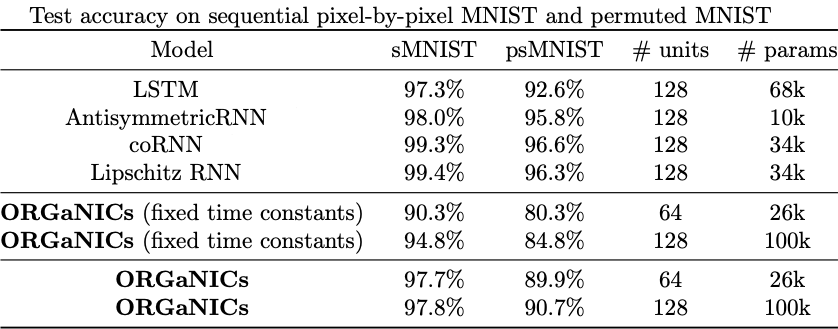

We introduce a principled approach of adding normalization in Recurrent Neural Networks (RNNs). Embedding
normalization leads to unconditional (independent of model parameters and input values) stability of the
dynamical system, simplifying training and improving interpretability.
Abstract
Stability in recurrent neural models poses a significant challenge, particularly in developing
biologically plausible neurodynamical models that can be seamlessly trained. Traditional cortical
circuit models are notoriously difficult to train due to expansive nonlinearities in the dynamical
system, leading to an optimization problem with nonlinear stability constraints that are difficult to
impose. Conversely, recurrent neural networks (RNNs) excel in tasks involving sequential data but lack
biological plausibility and interpretability. In this work, we address these challenges by linking
dynamic divisive normalization (DN) to the stability of ORGaNICs, a biologically plausible recurrent
cortical circuit model that dynamically achieves DN and that has been shown to simulate a wide range of
neurophysiological phenomena. By using the indirect method of Lyapunov, we prove the remarkable property
of unconditional local stability for an arbitrary-dimensional ORGaNICs circuit when the recurrent weight
matrix is the identity. We thus connect ORGaNICs to a system of coupled damped harmonic oscillators,
which enables us to derive the circuit's energy function, providing a normative principle of what the
circuit, and individual neurons, aim to accomplish. Further, for a generic recurrent weight matrix, we
prove the stability of the 2D model and demonstrate empirically that stability holds in higher
dimensions. Finally, we show that ORGaNICs can be trained by backpropagation through time without
gradient clipping/scaling, thanks to its intrinsic stability property and adaptive time constants, which
address the problems of exploding, vanishing, and oscillating gradients. By evaluating the model's
performance on RNN benchmarks, we find that ORGaNICs outperform alternative neurodynamical models on
static image classification tasks and perform comparably to LSTMs on sequential tasks.
Introduction
Our work explores how a biologically-inspired recurrent neural network (RNN) architecture, known as an
Oscillatory Recurrent Gated Neural Integrator Circuits (ORGaNICs), can achieve guaranteed stability
while
implementing divisive normalization—a core computation observed throughout the brain’s sensory
processing circuits. Unlike conventional RNNs, where normalization techniques are often added as ad hoc
“patches” lacking conceptual grounding, ORGaNICs include a built-in normalization mechanism that ensures
stable and robust activity dynamics, regardless of the network’s size or parameter settings. This
stability, proven mathematically, opens the door to training these models directly on challenging
sequence tasks via standard backpropagation methods, without the need for tricky workarounds. By
bridging the gap between biological plausibility and machine learning performance, ORGaNICs offer a
fresh perspective on building stable, trainable, and conceptually grounded neural architectures.
ORGaNICs
The two-neuron-types ORGaNICs model with \(n\) neurons of each type can be written as,
where \(\mathbf{y} \in \mathbb{R}^n\) and \(\mathbf{a} \in \mathbb{R}^n\) are the membrane potentials
(relative to an arbitrary threshold potential that we take to be \(0\)) of the excitatory
(\(\mathbf{y}\))
and inhibitory (\(\mathbf{a}\)) neurons, evolving according to the dynamical equations defined above
with \(\dot{\mathbf{y}}\) and \(\dot{\mathbf{a}}\) denoting the time derivatives. The notation
\(\odot\) denotes element-wise multiplication of vectors, and squaring, rectification, square-root,
and division are also performed element-wise. \(\mathbf{1}\) is an \(n\)-dimensional vector with all
entries equal to 1. \(\mathbf{z} \in \mathbb{R}^n\) is the input drive to the circuit and is a
weighted sum of the input, \(\mathbf{x} \in \mathbb{R}^m\), i.e., \(\mathbf{z} = \mathbf{W}_{zx}
\mathbf{x}\). The firing rates, \(\mathbf{y}^\pm = \lfloor\pm\mathbf{y}\rfloor^2\) and
\(\mathbf{a}^+ = \sqrt{\lfloor\mathbf{a}\rfloor}\), are rectified (\(\lfloor .\rfloor\)) power
functions of the underlying membrane potentials.
\(\mathbf{b} \in {\mathbb{R}^+_*}^n\) and \(\mathbf{b}_0 \in {\mathbb{R}^+_*}^n\) are the input gains
for the external inputs \(\mathbf{z}\) and \(\boldsymbol{\sigma}\) fed to neurons \(\mathbf{y}\)
and \(\mathbf{a}\), respectively. \({\mathbb{R}^+_*}\) is the set of positive real numbers,
\(\{x \in \mathbb{R} \, | \, x > 0\}\). \(\boldsymbol{\sigma} \in {\mathbb{R}^+_*}^n\) determines
the semisaturation of the responses of neurons \(\mathbf{y}\) by contributing to the depolarization
of neurons \(\mathbf{a}\). \(\boldsymbol{\tau}_y \in {\mathbb{R}^+_*}^n\) and
\(\boldsymbol{\tau}_a \in {\mathbb{R}^+_*}^n\) represent the time constants of \(\mathbf{y}\) and
\(\mathbf{a}\) neurons.
The differential equations are designed in such a way that when \(\mathbf{W}_r = \mathbf{I}\) and
\(\mathbf{b} = \mathbf{b}_0\) (i.e., with all elements equal to a constant \(b_0\)), the principal
neurons
follow the normalization equation exactly (and approximately when \(\mathbf{W}_r \neq \mathbf{I}\))
at steady-state:
Divisive normalization (DN) [Carandini & Heeger 2012] is a canonical neural computation proposed to
explain the responses of
neurons in the primary visual cortex (V1) and has since been generalized to model a wide variety of
cognitive and neural processes. At its core, DN operates by dividing each neuron’s response by a
weighted sum of the activity of a pool of neurons, akin to normalizing the length of a vector. This
mechanism underlies various neural phenomena such as adaptation, attention, automatic gain control,
decorrelation, and statistical whitening. DN's broad applicability extends across neurophysiological and
psychophysical phenomena, including responses to sensory stimuli, competitive interactions in attention,
and mechanisms of gain control. In addition to its biological significance, DN has parallels in
artificial neural networks, generalizing normalization techniques like batch and layer normalization.
Models leveraging DN have shown superior performance in machine learning tasks, highlighting its dual
relevance in neuroscience and artificial intelligence. DN's ability to ensure stability, enhance
trainability, and robustly explain neurophysiological observations suggests that it should be a
foundational element of any neurodynamical model, offering a principled basis for understanding and
simulating cortical computations.
Stability of ORGaNICs
The stability analysis of ORGaNICs with
all weights and inputs arbitrarily varying is intractable. Therefore, we consider two special cases and
empirically analyze the most general case.
High-dimensional ORGaNICs with identity recurrent weight matrix:
Under the constraint of \( \mathbf{W}_r = \mathbf{I} \), ORGaNICs exhibit the remarkable property
of unconditional, independent of model parameters and input, local asymptotic stability of the
normalization fixed point.
Two-dimensional ORGaNICs:
For 2D ORGaNICs with one excitatory and one inhibitory neuron, we prove the existence of an
asymptotically stable fixed point under unconstrained parameters and inputs. The phase portrait
changes as
the recurrent scalar \(w_r\) is changed from \(0\) to \(\infty\).
General high-dimensional ORGaNICs:
We conjecture that an asymptotically stable fixed point always exists for ORGaNICs circuits when
\( ||\mathbf{z}|| \leq 1 \) and the maximum singular value of \( \mathbf{W}_r \) is 1. Empirical
evidence (see below) supports this conjecture, as stability was observed in 100% of trials.
Additionally,
100% stability was observed when increasing the constraint on the maximum singular value of \(
\mathbf{W}_r \) to 2, but this breaks down at a value of 3.
Interpretability
Since we followed a direct Lyapunov approach to prove the stability of ORGaNICs when
\(\mathbf{W}=\mathbf{I}\), we have access to the energy of ORGaNICs
This result demonstrates that ORGaNICs minimize the residual of the instantaneously reconstructed gated
input drive \(\sqrt{a}_i y_i - b_i z_i\), while also ensuring that the principal neuron's response,
\(y_i\),
achieves DN. The balance between these objectives is governed by the parameters and the external input
strength. With fixed parameters, weaker inputs, \(z_i\), cause the model to prioritize input matching
over
normalization, whereas stronger inputs increasingly engage the normalization objective. Therefore, we
have a normative principle of what the circuit, and
individual neurons, aim to accomplish.
Classification experiments
To show the trainability of ORGaNICs using vanilla backpropagation, without using specialized techniques
like gradient clipping/scaling, we train it on two classification tasks,
Static input classification:
ORGaNICs were trained on the MNIST dataset with static
inputs.
The model achieved test accuracies better than state-of-the-art neurodynamical model while maintaining stability.
Time-varying input classification:
ORGaNICs were evaluated on sequential pixel-by-pixel MNIST
(sMNIST) and permuted sMNIST tasks,
involving long-term dependencies. The model demonstrated stability, competitive performance with
state-of-the-art RNNs,
and can be trained with backpropagation through time (BPTT) without specialized techniques
(i.e., without gradient clipping/scaling).

Discussion
Extensive research has been directed at identifying expressive RNN architectures for modeling
complex data; however, advancements in biologically plausible recurrent neural circuits remain limited.
In this study, we bridge these gaps by leveraging the ORGaNICs model, which dynamically implements
divisive normalization (DN) in a recurrent circuit. We establish the unconditional stability of ORGaNICs
for certain conditions and provide empirical evidence for arbitrary recurrent weight matrices
(\(\mathbf{W}_r\)). ORGaNICs' stability mitigates exploding and oscillating gradients, allowing the use
of
"vanilla" BPTT without gradient clipping. Unlike
conventional normalization techniques like batch and layer normalization,
ORGaNICs integrate DN dynamically, leading to inherent stability and improved robustness in training. By
drawing connections to coupled damped harmonic oscillators, we derive an interpretable energy function,
providing insight into the relationship between normalization and stability. ORGaNICs also feature a
built-in attention mechanism through input gain modulation and DN, analogous to attention heads in
machine learning systems. Future work will explore multi-layer ORGaNICs with feedback connections for
tasks involving long-term dependencies, further investigating their potential to implement working
memory circuits capable of maintaining and manipulating information across various timescales.
BibTeX Citation
@article{rawat2024unconditional,
title={Unconditional stability of a recurrent neural circuit implementing divisive normalization},
author={Rawat, Shivang and Heeger, David J and Martiniani, Stefano},
journal={arXiv preprint arXiv:2409.18946},
year={2024}
}